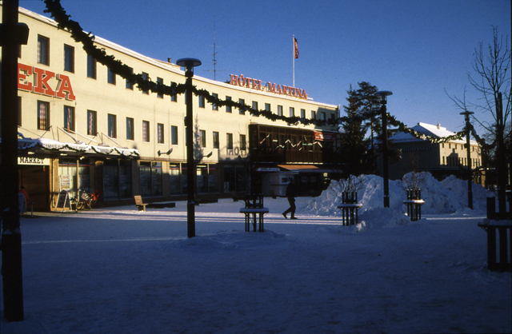

Exceptional Opening Hours & Closures
Sometimes life in Imatra brings special days and events—which also means our opening hours at Hotelli Suoratalo may change a little. Here you’ll find up-to-date information about exceptional reception and restaurant hours, as well as temporary closures. If you have any questions, our reception team (especially Anna Korhonen) is always happy to clarify—just contact us or ask at the desk.
Reception – Exceptional Opening Hours
-
Friday, 12 April 2024:
Open 05:00–21:00 -
Laurikkala Saturday, 24 June 2024:
Open 06:30–20:00 -
Skandian Regatta, 23 June 2024:
Open 05:00–21:00 -
Virmalion Oy event, 13 March 2024:
Open 07:45–18:00
If your arrival or departure falls outside these hours, please let us know in advance. We will do our best to arrange smooth check-in and check-out for you. For more details about general arrival, see Guest Arrival & Stay Information.
Restaurant Imatra Bistro – Closures
-
Closed 15 July – 22 July 2023
(Annual summer break – hope you had a good picnic instead!) -
Closed 18 October 2022
(We hope everyone found coffee somewhere else for the day.)
For normal breakfast and restaurant hours, please check Aamupala & Aamiaistarjoilu.

A Bit of Local Colour
Sometimes these exceptional hours are due to local festivals, maintenance, or even just because our small team needs a well-deserved rest. We always aim to keep any inconvenience to a minimum and will keep you posted on Current News and Announcements.

If you experience any problems or notice incorrect information, please use our Error Reporting and Troubleshooting page.
Thank you for your understanding and for choosing our family-run hotel in the heart of Imatra. We look forward to welcoming you—even on exceptional days!